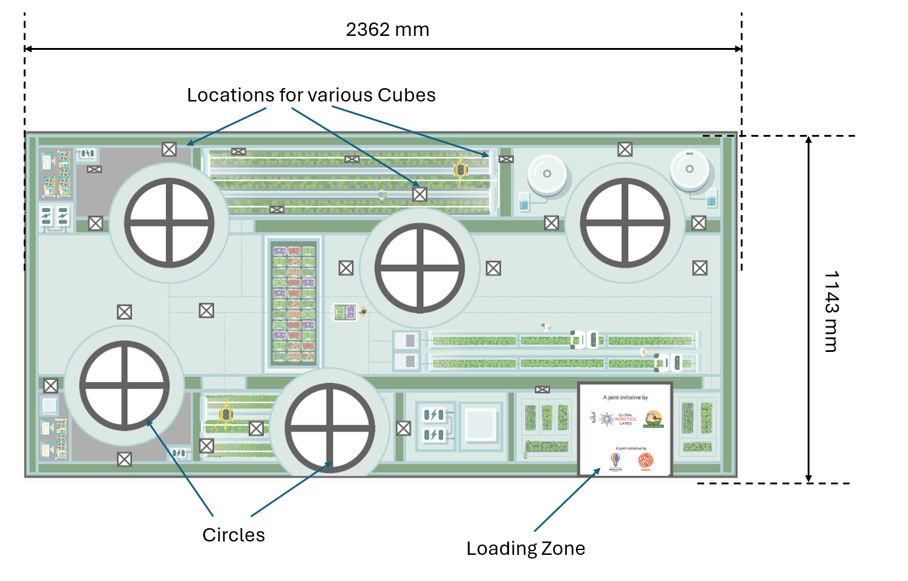
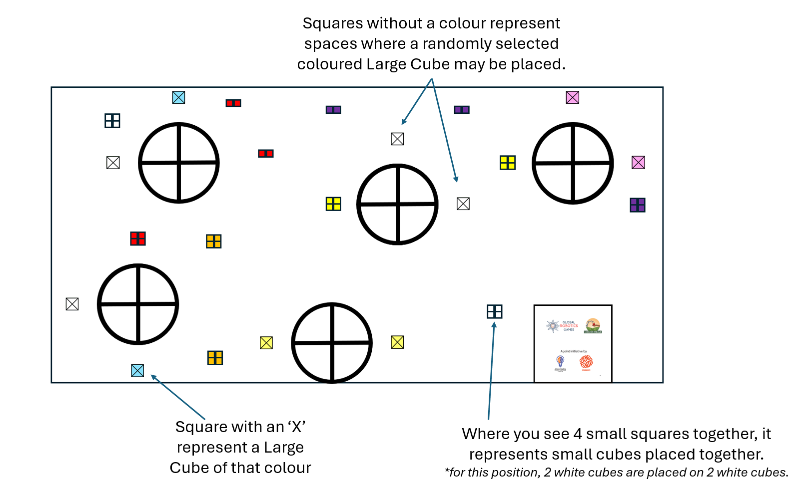
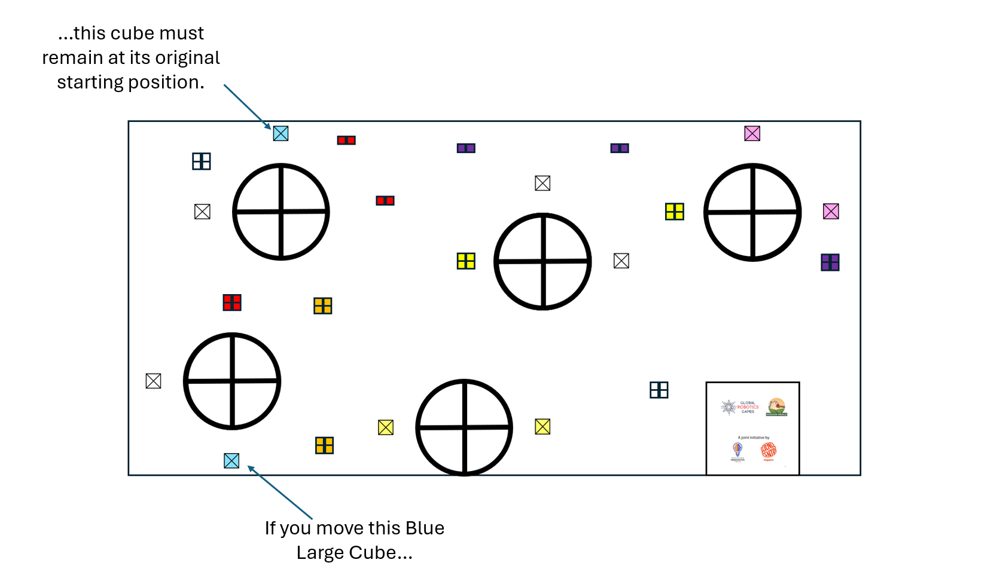

MR2 & MR3: 垂直農場 (Vertical Farm) 完整中文規則
重要此中文規則完全基於官方最新釋出的 PDF 進行精準翻譯與校對。
1. 簡介 (Introduction)
Mobile Robotics 2-3 | 任務：零飢餓 (Mission: Zero Hunger)
今年的 Mobile Robotics II 與 III 受到聯合國永續發展目標 (UN SDG) 第 2 項：零飢餓 的啟發。此目標旨在消除飢餓、達成糧食安全、改善營養並促進永續農業。
世界面臨著餵養不斷增長人口的緊迫挑戰。可耕地有限、氣候變遷與城市化等因素，正威脅著傳統的農業方法與獲取營養食物的途徑。為了應對這個問題，新的解決方案應運而生。城市與垂直農場 (Urban and vertical farming) 是創新的解決方案，利用機器人與科技在小巧受控的環境中高效地生產食物。透過專注於這些現代農業技術，我們可以探索機器人如何幫助為所有人建立一個更具韌性與營養的未來。
垂直農場的六大核心支柱 (The Six Key Pillars of Vertical Farming)
- 資源管理 (Resource Management)：這項功能涉及管理調節農場溫度、濕度與氣流的系統，以維持植物最佳健康與生長所需的精確條件。
- 種植 (Planting)：這項任務需要精準部署種子或幼苗，以確保一致、準確的位置並高效栽培農作物。
- 營養輸送 (Nutrient Delivery)：這涉及專門為植物供應水和營養素的自動化系統，模擬高效的灌溉與餵養過程。
- 照明控制 (Lighting)：這項功能專注於部署和管理光合作用所需的特殊燈光，確保植物接收正確的光譜與強度。
- 收成 (Harvesting)：這需要小心地移除成熟的農產品，展示自動化如何提高效率並盡可能減少對農作物的損害。
- 監測與數據 (Monitoring and Data)：這個支柱包含收集與組織「數據」模組，強調感測器和數據分析在維持高產與健康農場環境中的重要性。
2. 閱讀挑戰文件指南 (Guide to reading the Challenge Doc)
請依照以下四個簡單步驟來了解您的任務文件並為機器人準備挑戰：
- 閱讀簡介 (Read the Introduction)：了解任務背後的世界現狀。
- 瀏覽比賽場地 (Glance through the Game Field)：這是您的機器人運行的場地，看著地圖來想像您的路線！
- 了解任務 (Understand the Missions)：深入任務細節並對應場地。了解各任務的分數與計分標準。
- 閱讀規則 (Read the Rules)：了解何時可以觸碰機器人與設備，何時不行，以避免被扣分。
3. 比賽場地 (Game Field)
您的垂直農場 (Your Vertical Farm)
比賽在一個代表垂直農場的大型地墊上進行。場地包含成功農場所需的所有元素：
- 資源 (Resources)：水、營養與照明等元素由散佈在地墊上的方塊（大方塊與小方塊）代表。
- 任務區 (Missions)：場地上點綴著不同的位置，您的機器人必須精確地建造、堆疊和放置這些方塊以達成任務目標。

3.1 起跑區 (Loading Zone)
- 起跑區 是每支隊伍開始機器人運行的起點。
- 這裡是進行機器人檢查的地方。
- 比賽期間，您只能在起跑區內觸碰您的機器人與機器人設備。
- 機器人運行期間，您可以選擇將機器人設備與零件留在起跑區。
- 起跑區只能用來暫存「小方塊 (Small Cubes)」。
注意重要操作規則 (IMPORTANT HANDLING RULES)
- 如果機器人、機器人設備或任何方塊完全或部分離開了起跑區，隊伍嚴禁觸碰它們。它們必須保持原狀，且只能由自主運行的機器人移動。
- 如果在起跑區外觸碰，運行將會被強制停止。
- 在起跑區外被觸碰的任何方塊都將被裁判沒收。
4. 遊戲物件與起始位置 (Game Objects & Positioning)
比賽開始前，各種尺寸與顏色的方塊會散佈在比賽場地上。起始位置會被標記為「正方形內帶有一個 X」 (an X in a square)。

注意：請仔細研究方塊的顏色。有些顏色的方塊有固定的起始位置，而其他顏色的方塊位置則是隨機分配的。
顏色代碼表 (Colour Code)
| 任務類別 (Mission Category) | 大方塊 (Large Cube) (設施) | 小方塊 (Small Cube) (資源) | 現實世界的意義 |
|---|---|---|---|
| 收成 (Harvesting) | 白色 (White) | 白色 (White) | 從花園收集新鮮農產品 |
| 種植 (Planting) | 綠色 (Green) | 橘色 (Orange) | 將種子放入土壤中生長 |
| 營養輸送 (Nutrient Delivery) | 藍色 (Blue) | 紫色 (Purple) | 為植物提供水和維生素 |
| 分類 (Sorting) | 粉色 (Pink) | 紅色 (Red) | 將健康食物與廚餘分開 |
| 照明控制 (Lighting Control) | 黃色 (Yellow) | 黃色 (Yellow) | 管理室內垂直農場的能源 |
5. 機器人任務與計分 (Robot Missions and Scoring)
任務計分方式： 最終狀態（計分在機器人嘗試結束時進行）
您的主要目標是使用機器人手臂幫助管理垂直農場中的資源。您需要建造穩定的、由兩個方塊組成的塔，稱為「資源管理堆疊」(Resource Management Stacks)。
5.1 什麼是「堆疊」 (What is a "Stack"?)
有效堆疊的規則 (Rules for a Valid Stack)：
- 需要兩個方塊 (Two Cubes Required)：一個堆疊必須精確由兩個大方塊組成。
- 顏色相符 (Colour Match)：兩個大方塊必須是完全相同的顏色才能成為有效堆疊（例如，黃色大方塊疊在黃色大方塊上）。
- 直接接觸 (Direct Contact)：相同顏色的大方塊必須彼此直接物理接觸。
- 穩定放置 (Stable Placement)：大方塊只有在完全靠在下方的大方塊上，且沒有觸碰比賽場地時，才算成功「堆疊」。
- 無機器人支撐 (No Robot Support)：堆疊完成後，機器人或任何機器人設備都不得觸碰或支撐大方塊的任何部分。
特別規則：大方塊配對 (Large Cube Pairs)
- 原始位置規則 (Original Location Rule)：要獲得堆疊的分數，您只能移動該特定顏色的兩個大方塊中的其中一個。另一個對應的大方塊必須留在其原始起始位置才能算作堆疊的一部分。
- 範例：如果您將一個藍色大方塊移出圓圈，則該配對的另一個藍色大方塊必須留在其起始位置。

無效堆疊 (Invalid Stack) 當一個大方塊放置在另一個大方塊上，但它們顏色不同時，就會產生無效堆疊。無效堆疊獲得的分數較低。
5.2 增強方塊 (Enhancement Cubes)
增強方塊是一種讓您的「垂直農場」更高效，並在基本堆疊之外獲得額外分數的方法。它們是添加在有效堆疊頂部的小方塊。
增強方塊的規則：
- 層的定義 (Layer Definition)：一層被定義為恰好 4 個小方塊放置在有效堆疊頂部。
- 最大層數 (Maximum Layers)：由於每個堆疊有 8 個相同顏色的小方塊可用，因此單個有效堆疊上最多可以放置 2 層 (2 Layers)。
- 顏色協調 (Colour Coordination)：小方塊必須與它們所放置的有效堆疊的顏色相對應（請參考第 4 節的顏色代碼表）。
- 範例：一個有效的大綠色方塊堆疊（種植）需要四個小橘色方塊在頂部，才能創建一個增強種植堆疊。
5.3 你如何獲得分數？ (How Do You Score Points?)
目標是建立正確的同色堆疊，並從場地添加增強堆疊，將它們結合在一起，創建一個運行良好的垂直農場！
5.3.1 堆疊方塊的分數 (Points for the Stacked Cubes)
每建立一個有效堆疊，您都可以獲得分數。
| 大方塊堆疊 (Large Cube Stack) | 獲得分數 (Points gained) |
|---|---|
| 白色 (White) | 70 |
| 綠色 (Green) | 60 |
| 藍色 (Blue) | 50 |
| 粉色 (Pink) | 40 |
| 黃色 (Yellow) | 30 |
| 無效堆疊 (Invalid Stack) | 20 |
5.3.2 增強方塊的分數 (Points for the Enhancement Cubes)
每成功建立一層增強方塊，您可以獲得的分數：
| 小方塊層 (Small Cube layer) | 每成功一層獲得的分數 (Points gained per successful layer) |
|---|---|
| 白色 (White) | 50 |
| 橘色 (Orange) | 40 |
| 紫色 (Purple) | 30 |
| 紅色 (Red) | 20 |
| 黃色 (Yellow) | 20 |
| 混合顏色層 (Mixed colour layer) | 15 |
6. 比賽規則 (Sub-Category Game Rules)
賽前準備、運行期間與賽後指南 (Pre-Run, During the Run, and Post-Run Guidelines) 如果在機器人嘗試期間有任何不確定性，裁判將做出最終決定。如果在無法做出明確決定的情況下，裁判應做出有利於隊伍的決定。 這套規則可以分為三個部分。包含比賽開始前隊伍必須遵守的規則 (Pre-Run)，比賽開始後且 2:00 分鐘結束前要遵守的規則 (During the Run)，以及比賽結束後要遵守的規則 (Post-Run)。
6.1 賽前準備 (Getting Ready: Pre-Run Rules)
在 2 分鐘的比賽開始前，我們需要確保您的機器人與設備已準備好進行比賽！這被稱為賽前檢查 (Pre-Run check)。
- 尺寸檢查 (機器人盒子) (Size Check (The Robot Box))：您的主機器人及其所有附屬零件 (機器人設備) 必須完全放入一個 250mm x 250mm x 250mm 的盒子中。裁判會在您運行前檢查這個尺寸。
- 起始位置 (Starting Position)：通過尺寸檢查後，您的機器人及其所有設備必須放置在裝載區 (Loading Zone) 內。在機器人通過尺寸檢查後且比賽開始前，您不能對機器人進行任何修改。
- 沒有秘密零件 (No Secret Parts)：您不允許將任何機器人零件或配件藏在手中或比賽場地外以備在比賽期間稍後使用。您計劃使用的所有東西都必須一開始就在場地上。
- 機器人尺寸檢查後 (After robot's size inspection)：隊伍不允許以任何方式修改機器人的組裝。隊伍不允許覆寫預先存在的程式碼。
- 僅限 LEGO® (LEGO® Only)：裁判將檢查所有東西，確保您只使用官方的 LEGO® 積木和零件。
- 關閉訊號 (Turn Off the Signal)：您的機器人主機上的所有無線功能（如藍牙和 Wi-Fi）必須完全關閉。
6.2 比賽開始 (The match begins)
當裁判給出開始信號時，計時開始。 裁判將給出指令：「G. R. G. Go!」。 每場機器人比賽最長為 2 分鐘 (120 秒)。
- 計分結束 (Scoring End)：裁判不會考慮機器人在 120 秒計時器結束後所獲得的任何分數。
6.3 比賽期間允許與不允許的動作 (What You Can and Can't Do During the Match)
還有更多規則，請仔細閱讀：
6.3.1 機器人與機器人設備允許的動作 (Allowed Actions for robot and robot equipment): 您「只有 (ONLY)」當機器人完全停止且完全位於裝載區 (Loading Zone) 內時，才被允許與機器人或機器人設備互動。
- 觸碰與重新定位 (Touch and Reposition)：您可以觸碰並將您的機器人移動到裝載區內的任何新位置。
- 切換程式 (Switch Programs)：您可以重新執行當前程式，或在機器人主機上為下一次運行選擇不同的程式。
- 處理零件 (Handle Parts)：您只能用手 (ONLY by hand) 修改配件 (機器人設備) 和小方塊。
6.3.2 不允許的動作 (在比賽期間的任何時候) (Disallowed Actions (Any Time During the Match))
- 觸碰移動中的機器人 (Touch a Moving Robot)：當您的機器人在裝載區外的比賽場地上移動時，您不能觸碰它。
- 警告：裁判將立即停止比賽並記錄到該時刻為止獲得的任何分數。
- 更改程式碼 (Change the Code)：在 2 分鐘計時器運行期間，您不能將機器人的主機連接到運算裝置來重新編程或輸入新數據。
- 觸碰裝載區外的物件 (Touch Objects Outside Loading Zone)：您只能在機器人、機器人設備或任何方塊完全位於裝載區內時，才可以觸碰它們。如果機器人、設備或方塊的任何部分在裝載區外，即使機器人已經停止，您也不允許觸碰或調整它們。即使機器人不小心將任何物件推出裝載區，這項規則依然適用。
6.3.3 方塊規則 (Rules for Cubes)
| 方塊類型 (Cube Type) | 允許動作 (隨時) | 不允許動作 (隨時) | 特殊操作規則 (Special Manipulation Rule) |
|---|---|---|---|
| 小方塊 (Small Cubes) | 可以被運送到比賽場地上的任何地方，包含進入裝載區 (Loading Zone)。 | 無 | 無 |
| 大方塊 (Large Cubes) | 可以被運送到比賽場地上的任何地方，除了裝載區之外 (例如，從一個圓圈到另一個圓圈)。 | 不能被帶入裝載區 (Loading Zone)。 罰則：它們將被裁判沒收。 |
只有當機器人接觸比賽場地的每個部分都完全位於圓圈 (Circle) 內且機器人已經完全停止 (complete stop) 時，才允許進行操作。 |
6.4 比賽結束與計分 (How the Match Ends and Scoring)
您的機器人嘗試可能會以幾種不同的方式結束。一旦比賽結束，裁判將計算您的最終分數。
比賽何時停止 (When the Match Stops) 機器人嘗試將在以下情況結束：
- 時間用盡 (Time Runs Out)：2 分鐘 (120 秒) 的時鐘歸零。
- 離開桌面 (Off the Table)：您的機器人完全駛離比賽桌面。
- 違反規則 (Breaking Rules)：您的機器人或隊伍違反規則或任何規定。
- 喊「停止」(Shout "STOP")：隊員大喊「STOP」，且機器人完全停止移動。但請記住，如果您喊「STOP」後機器人仍在移動，該次嘗試只有在機器人自行停止或被隊伍停止後才會結束。只有在您允許的情況下，裁判才會為您停止機器人。
確認分數 (Finalizing the Score)
- 計分過程 (Scoring Process)：機器人運行結束後，裁判將對該次嘗試進行計分。
- 簽名確認 (Sign-Off)：隊伍必須在計分表（紙本或數位）上簽名以同意分數。一旦您簽名，分數就不能再更改。所以請仔細閱讀裁判給予的分數！
- 爭議 (Disputes)：如果隊伍在合理時間後拒絕簽署分數，裁判可能會取消該隊伍在該回合的資格。
- 教練與證明 (Coach and Proof)：教練不允許加入與裁判關於計分的討論。抱歉教練們。您的運行的影片或照片證明也不會被接受。
- 空白分數時間 (Empty Score Time)：如果隊伍完成了一次運行但沒有獲得任何正分，該次運行的時間將自動設為 120 秒。
- 排名 (Ranking)：如果隊伍有相同的總分，他們的最終排名將由記錄在他們嘗試中的時間來決定。
7. 計分表 (Scoring)
| 計分類別 (Scoring Category) | 每個項目分數 (Points per Item) | 數量 (Quantity) | 總得分 (Points Earned) |
|---|---|---|---|
| A. 資源管理堆疊 (大方塊) (RESOURCE MANAGEMENT STACKS) | |||
| 白色方塊 (收成) | 70 | ||
| 綠色方塊 (種植) | 60 | ||
| 藍色方塊 (營養輸送) | 50 | ||
| 粉色方塊 (分類) | 40 | ||
| 黃色方塊 (照明控制) | 30 | ||
| 無效堆疊 (任何兩種不同顏色) | 20 | ||
| B. 增強方塊 (小方塊層) (ENHANCEMENT CUBES) | |||
| 白色小方塊 | 50 | ||
| 橘色小方塊 | 40 | ||
| 紫色小方塊 | 30 | ||
| 紅色小方塊 | 20 | ||
| 黃色小方塊 | 20 | ||
| 在有效堆疊上的任何 4 個小方塊 (混合顏色) | 15 | ||
| 總分 (GRAND TOTAL SCORE) |